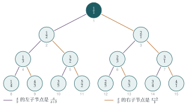

STEP III 2020，第 8 题
继续之前，请先阅读题目（原题为英文）。题目载于 OCR 提供下载的 2020 年 STEP 试卷（zip 文件）内的 STEP III 试卷： www.ocr.org.uk/Images/696589-2020-past-papers.zip
引子
你能否把所有正分数逐一列出，使每个分数都恰好出现一次？这看来是不可能的：任意两个分数之间还有无穷多个分数，根本没有“下一个”分数可以写下来。然而，康托尔（Georg Cantor）在 1870 年代证明了这是做得到的。这表示，在某个精确的意义下，分数并不比整数多。
康托尔的列表颇为笨拙：表中既有 \(\frac12\)，也有 \(\frac{2}{4}\)，重复的项要逐一删去。本题要构造的列表却完全没有重复，而且来自一个规则简单得出奇的数列（sequence）。这个列表由 Neil Calkin 和 Herbert Wilf 于 2000 年发表，不过数列本身早在 1858 年已由 Moritz Stern 研究过。
动笔之前
在证明任何东西之前，先计算最初十五项左右。你留意到比值 \(u_n / u_{n+1}\) 有甚么特别之处？
数列的开首几项是 \[1,\ 1,\ 2,\ 1,\ 3,\ 2,\ 3,\ 1,\ 4,\ 3,\ 5,\ 2,\ 5,\ 3,\ 4,\ 1,\ 5,\ \ldots\] 而比值 \(u_n / u_{n+1}\) 依次是 \[\tfrac11,\ \tfrac12,\ \tfrac21,\ \tfrac13,\ \tfrac32,\ \tfrac23,\ \tfrac31,\ \tfrac14,\ \tfrac43,\ \tfrac35,\ \tfrac52,\ \tfrac25,\ \tfrac53,\ \tfrac34,\ \tfrac41,\ \ldots\] 每个分数都以最简分数（lowest terms）的形式出现，而且没有一个重复。题目要你证明这个现象会一直持续下去，并且每个正分数迟早都会出现。
逐步解题
阶段 1 奇数项胜过偶数项
相邻两项不是 \((u_{2k}, u_{2k+1})\)，就是 \((u_{2k+1}, u_{2k+2})\)。
试用 \(u_k\) 和 \(u_{k+1}\) 表示这两种数对。哪一项较大？
\((u_{2k}, u_{2k+1}) = (u_k,\ u_k + u_{k+1})\)，而 \((u_{2k+1}, u_{2k+2}) = (u_k + u_{k+1},\ u_{k+1})\)。由于每一项都是正整数（用归纳法（induction）不难证明），\(u_k + u_{k+1}\) 比 \(u_k\) 和 \(u_{k+1}\) 都大。唯一的例外是第一对 \((u_1, u_2) = (1, 1)\)，它不符合上述任何一种形式，因为 \(u_1\) 是直接定义的。■
阶段 2 相邻两项互质
假设 \(d > 1\) 同时整除 \(u_{2k}\) 和 \(u_{2k+1}\)，即同时整除 \(u_k\) 和 \(u_k + u_{k+1}\)。那么 \(d\) 还整除甚么？
\(d\) 整除 \((u_k + u_{k+1}) - u_k = u_{k+1}\)，所以 \(d\) 整除相邻数对 \(u_k, u_{k+1}\)，而这一对在数列中的位置较前。另一种情况完全相同：若 \(d\) 整除 \(u_k + u_{k+1}\) 和 \(u_{k+1}\)，它便整除 \(u_k\)。
因此，相邻数对的公因数会传回较前的一对，然后再传回更前的一对，如此类推。位置不可能无止境地减小（又是良序性（well-ordering）），所以 \(d\) 最终必须整除第一对 \(u_1 = u_2 = 1\)。当 \(d > 1\) 时这是不可能的。所以每一对相邻项都互质（coprime）。■
阶段 3 没有数对出现两次
阶段 1 告诉你一件有用的事：看到一个相邻数对 \((a, b)\) 时，你可以判断 \(a\) 位于奇数位置还是偶数位置。怎样判断？然后，你能否还原出阶段 2 所指的、在它之前的那个数对？
若 \(a < b\)，则（由阶段 1）\(b\) 位于奇数位置，所以对某个 \(k\)，这个数对是 \((u_{2k}, u_{2k+1}) = (u_k, u_k + u_{k+1})\)，而它的“父”数对 \((u_k, u_{k+1})\) 就是 \((a,\ b - a)\)。若 \(a > b\)，这个数对是 \((u_{2k+1}, u_{2k+2})\)，其父数对是 \((a - b,\ b)\)。若 \(a = b\)，阶段 1 表明这个数对必定是最初的一对 \((1,1)\)。
所以除第一对外，每个相邻数对都决定了它的父数对，以及父数对的位置（这个结构可以看成一棵树，见图 1.8.1）：当子数对位于 \(2k\) 或 \(2k+1\) 时，父数对位于位置 \(k\)。现在假设 \((a, b)\) 出现在两个不同的位置。它们的父数对便是出现在两个位置的同一数对，而这些父数对的父数对亦然，如此类推。这样一直追溯上去，我们最终会在 \(1\) 以外的位置找到 \((1,1)\)，而阶段 1 已排除了这个可能。■
阶段 4 每个互质数对都会出现
假设某个互质数对 \((a, b)\) 从未以相邻两项的形式出现。你应该考虑哪一个这样的数对？
在所有“缺席”的互质数对之中，取 \(a + b\) 的值最小的一个：这就是极小反例（minimal counterexample）。它不可能是 \((1,1)\)，因为这一对确实出现了，所以 \(a \neq b\)（互质而又相等，必有 \(a = b = 1\)）。
若 \(a > b\)：数对 \((a - b, b)\) 互质（\(a-b\) 和 \(b\) 的任何公因数都整除 \(a\)），而它的和 \(a\) 小于 \(a + b\)。由极小性，这个数对确实出现，设它位于位置 \(k, k+1\)。但这样便有 \(u_{2k+1} = u_k + u_{k+1} = a\) 和 \(u_{2k+2} = u_{k+1} = b\)，所以 \((a, b)\) 终究还是出现了。
若 \(a < b\)：同理，\((a, b - a)\) 出现在某个 \(k, k+1\)，于是 \((u_{2k}, u_{2k+1}) = (a, b)\)。
无论哪种情况都得出矛盾。所以每一对互质的正整数都会以相邻两项的形式出现。■
（题目把第 (iv) 部分写成递降法（descent）：一个缺席的数对会产生一个更小的缺席数对。这其实是同一个论证，只是倒过来读而已。）
阶段 5 所有分数的列表
每个正有理数（rational number）都可以唯一地写成最简分数 \(a/b\)，其中 \(a, b\) 互质。由阶段 4，\((a, b)\) 会以某个相邻数对 \((u_n, u_{n+1})\) 的形式出现，所以 \(f(n) = a/b\)：\(f\) 的值域（range）是全体正有理数。由阶段 3，它只出现一次；又由阶段 2，每个值 \(f(n)\) 本身已是最简分数，所以两个不同的 \(n\) 不可能给出同一个分数。因此 \(f\) 是由正整数到正有理数的双射（bijection），并且有逆函数（inverse）。■
回顾
递降与它的逆向。 公因数和重复的数对都是往回追溯到数列的起点。缺席的数对则用极小反例处理，向前构造。
双射要证两半。 “每个分数都出现”（满射，onto）和“没有分数出现两次”（单射，one-to-one）是两个独立的命题，要分开证明。
先动手计算。 写出十五项之后，这些命题便显得可信，同时也提示了推动整个证明的父子结构。
背后的数学
把正分数排成一棵树：把 \(\frac11\) 放在顶端，并给每个分数 \(\frac{a}{b}\) 两个子节点，左边是 \(\frac{a}{a+b}\)，右边是 \(\frac{a+b}{b}\)。逐行由左至右读这棵树，得到的正是本题的列表 \(f(1), f(2), f(3), \ldots\)（图 1.8.1）。阶段 3 说明每个分数都有唯一的父节点，阶段 4 说明每个分数都在树中。2003 年，Moshe Newman 发现连这棵树也不需要：列表中每个分数都可以由前一个分数算出，公式是 \[x_{n+1} = \frac{1}{2\lfloor x_n \rfloor - x_n + 1}.\]

不同大小的无穷
可以这样逐一列出的集合称为可数（countable）集合。分数是可数的，这令人意外，因为分数看来比整数多得多。在大学的第一个学期，你还会遇到康托尔的对角论证法（diagonal argument），它证明实数（real numbers）是不可数的：任何实数列表都必定有所遗漏。所以无穷确实有不同的大小，而实数所构成的无穷严格地大于有理数所构成的无穷。这是你在大学一年级课程中会遇到的最令人震惊的结果之一。
Stern 数列
数列 \(u_n\) 称为 Stern 双原子数列（Stern’s diatomic sequence），它还有许多其他面貌。例如，\(u_{n+1}\) 等于把 \(n\) 写成 \(2\) 的幂之和、而每个幂最多用两次的方法数目。它与 Stern–Brocot 树以及连分数（continued fractions）关系密切，而连分数能给出无理数的最佳有理逼近。
思维技巧
要证明两个集合大小相同，就要把它们的元素准确地一一配对：证明目标集合的每个元素都被对应到（满射），而且没有元素被对应两次（单射）。
双射是计数的基础，不论有限还是无穷，你在大学里会经常用到。在本题中，两半的证明都是把一个结构追溯回它的起点。
延伸练习
找出分数。 对哪一个 \(n\) 有 \(f(n) = \frac{3}{5}\)？又 \(f(n) = \frac{5}{3}\) 呢？利用父节点的规则倒推回 \(\frac11\)。
Newman 公式。 验证由 \(x_1 = 1\) 开始，Newman 公式能给出列表中的首十个分数。
康托尔的对角论证法。 假设你有一个列表，以小数形式列出了 \(0\) 与 \(1\) 之间的所有实数。构造一个小数，使它与列表中第 \(n\) 个数在第 \(n\) 位数字上不同。为甚么这就说明列表并不完整？（对于像 \(0.0999\ldots = 0.1\) 这样的小数，需要留意甚么？）
可数并集。 较难 给出一个与正整数之间的明确双射，从而证明由全体正整数数对 \((m, n)\) 组成的集合是可数的。（试试 \(2^{m-1}(2n-1)\)。）
延伸阅读
Neil Calkin & Herbert Wilf, “Recounting the rationals”（American Mathematical Monthly，2000 年；〈重新数算有理数〉）。全文四页，完全读得懂。
Aigner & Ziegler, Proofs from THE BOOK（《数学天书中的证明》），第 17 章 “Sets, functions, and the continuum hypothesis”（集合、函数与连续统假设），当中包括 Calkin–Wilf 树。
Ian Stewart & David Tall, The Foundations of Mathematics（《数学基础》，Oxford University Press）。可数性、康托尔与实数，内容与大学一年级课程相若。